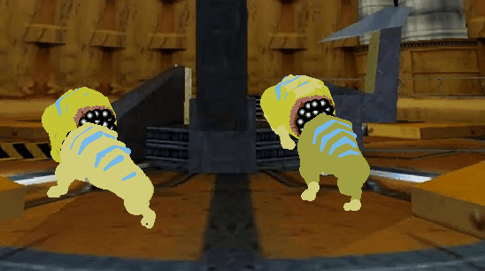
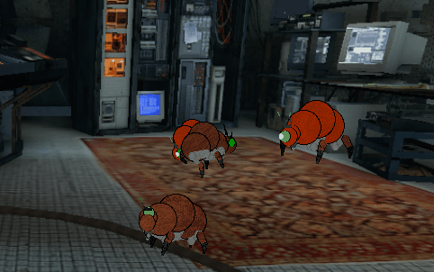

Ecology
Extraterrestrial organisms have been able to survive on Earth despite many hardships presented by Earth's unfamiliar ecology. We seek to understand how these organisms have adapted to unfamiliar conditions, and how to most effectively and safely share our space with our new "neighbors".
Test Chamber
The arrival of extraterrestrial creatures to the Earth at large was caused by the Resonance Cascade, which provoked portal storms across the world. Before this, Black Mesa had been covertly studying extraterrestrial life. The first environment that many Xenian creatures were exposed to on Earth was that of Black Mesa's lifeless interior. Displaced and confused, these creatures quickly became unpredictable and violent.
Download
[Added 20X0]
Kleiner's Lab
One of New Lambda's founders, Dr. Isaac Kleiner was previously a member of the Black Mesa Science Team. A pioneer of teleportation technology, Dr. Kleiner was also the first to explore domestication of headcrabs. Dr. Kleiner's headcrab "Lamarr" was the first successfully debeaked headcrab, and has provided much of the data we now have on the species.
Download
[Added 20X0]